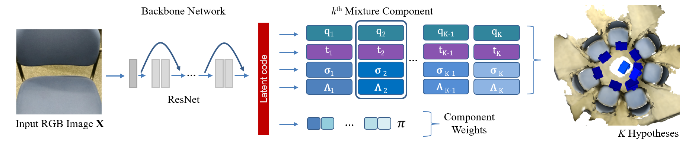

<meta name="viewport" content="width=device-width, initial-scale=1">
<link rel="stylesheet" href="github-markdown.css">
<style>
	.markdown-body {
		box-sizing: border-box;
		min-width: 200px;
		max-width: 980px;
		margin: 0 auto;
		padding: 45px;
	}

	@media (max-width: 767px) {
		.markdown-body {
			padding: 15px;
		}
	}
</style>
<article class="markdown-body">
  
	<p>In a highly ambiguous environment, similar looking views can easily confuse current camera pose regression models and lead to incorrect localization
results. Instead, given a query RGB image, our aim is to predict the possible modes as well as the associated uncertainties, which we model by the parameters
of Bingham and Gaussian mixture models.</p>
</article>